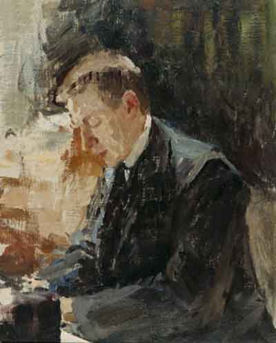

"Do not waste your time with music that is trite or ignoble. Life is too short to spend it wandering in the barren Saharas of musical trash."

Portrait of Sergei Rachmaninoff by Polish painter, Jan Ciągliński
Family
Born: near Novgorod, Russia
Father: Vasily Arkadyevich Rachmaninoff, an army officer and amateur pianist
Mother: Lyubov Petrovna Butakova, began his piano lessons at age 4
Married: his first cousin, Natalya Satina in 1902
Children: Irina Sergeievna Rachmaninova and Tatiana Sergeievna Rachmaninova
Death: of advanced melonoma
A Selection of Works
Prelude in C sharp minor, op. 3 no. 2, or The Bells of Moscow
13 Preludes, Op. 32 – 10, Lento (B minor), his personal favorite
Piano Concerto no. 2 in C minor, op. 18, dedicated to Dr. Dahl
Symphony no. 2 in E minor, op. 27
Suite no. 2, op. 17
Études Tableaux, Op. 33 – VIII. Grave
Interesting Facts
Rachmaninoff was 6'6" tall and his hands were huge, he apparently could span a 13th.
He gave many charitable performances and donated generously to the war effort against the Nazis.
At ages 25-27 he suffered severe depression, self-doubt and a nervous breakdown. He recovered with help from Dr. Dahl with hypnotherapy and other psychotherapy techniques.
The October Revolution of 1917 marked the beginning of significant political turmoil in Russia, which disturbed Racmaninoff. On receipt of an invitation to give ten piano recitals across Scandinavia he left Russia with his family, never to return.
When he moved to the US, he anglicized the spelling of his name from Rachmaninov to Rachmaninoff.
As he was about to begin a tour in America, he received offers from numerous piano manufacturers to tour with their instruments, yet he chose Steinway, the only one that did not offer him money. Steinway's association with Rachmaninoff continued for the rest of his life.
In 1918, the family moved to New York, and in 1943 Rachmaninoff and his wife became US citizens. He died one month later.